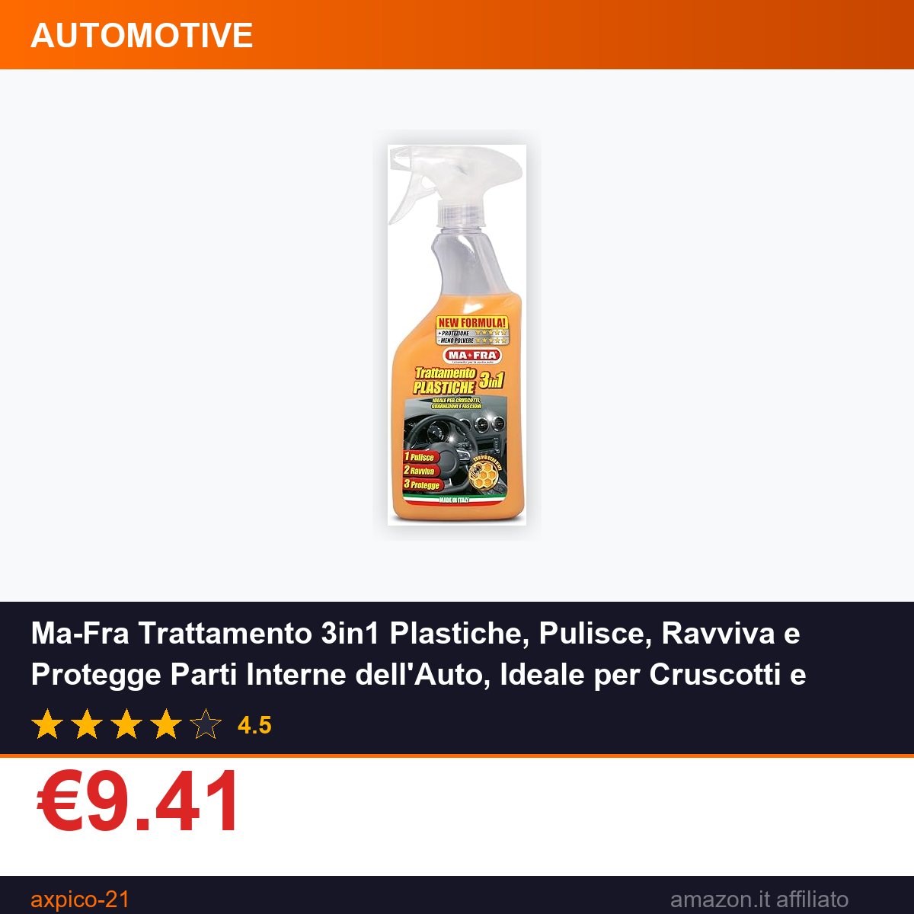

Ma-Fra Trattamento 3in1 Plastiche, Pulisce, Ravviva e Protegge Parti Interne dell'Auto, Ideale per Cruscotti e Guarnizioni, Crea Barriera Anti Raggi UV, Rallenta Formazione di Polvere, Formato 500ml
⚠️ Il prezzo potrebbe variare. Verifica il prezzo aggiornato su Amazon prima di acquistare. In qualità di Affiliato Amazon ricevo un guadagno dagli acquisti idonei.
Se ami prenderti cura della tua auto, sai bene che l'attenzione per gli interni è fondamentale tanto quanto quella per la carrozzeria. Il Ma-Fra Trattamento 3in1 per Plastiche è l'alleato perfetto per mantenere cruscotto, guarnizioni e superfici plastiche interne in condizioni ottimali, senza dover acquistare prodotti separati per ogni esigenza.
Caratteristiche principali
- Azione 3 in 1: pulisce a fondo le superfici interne, ripristina la brillantezza originale delle plastiche e crea uno strato protettivo duraturo.
- Barriera anti UV: protegge le parti trattate dai raggi solari, prevenendo ingiallimento e deterioramento precoce delle guarnizioni e del cruscotto.
- Rallenta la formazione di polvere: il trattamento riduce l'accumulo di sporco, mantenendo le superfici più pulite per più tempo tra una manutenzione e l'altra.
- Formato da 500ml: quantità generosa, adatta per numerosi utilizzi su più veicoli o per trattamenti periodici della propria auto.
Prezzo e offerta
Il Ma-Fra Trattamento 3in1 è attualmente disponibile su Amazon a €9.41, un prezzo estremamente vantaggioso per un prodotto di un brand affermato nel settore automotive. A confermarne la qualità è la valutazione media di 4.5 su 5 stelle rilasciata dagli utenti che lo hanno già testato: un punteggio che ne attesta l'efficacia reale. Scegliere questo prodotto 3 in 1 permette inoltre di risparmiare rispetto all'acquisto di referenze separate per pulizia, lucidatura e protezione, ottimizzando il budget dedicato alla cura della vettura senza compromessi sui risultati.
Non perdere l'occasione di rinnovare gli interni della tua auto con un solo gesto: prova il Ma-Fra Trattamento 3in1 e vedrai subito la differenza. Acquista su Amazon